SaGa: Emerald Beyond
サガ エメラルド ビヨンド [Nintendo Direct 2023.9.14]
「サガ」シリーズ TGS2023 スペシャルステージ
2023/9/23要素
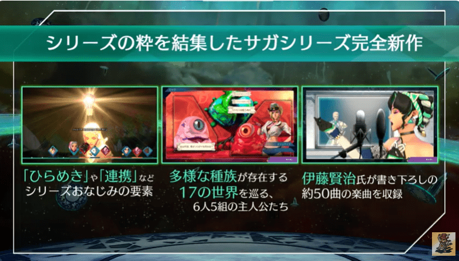
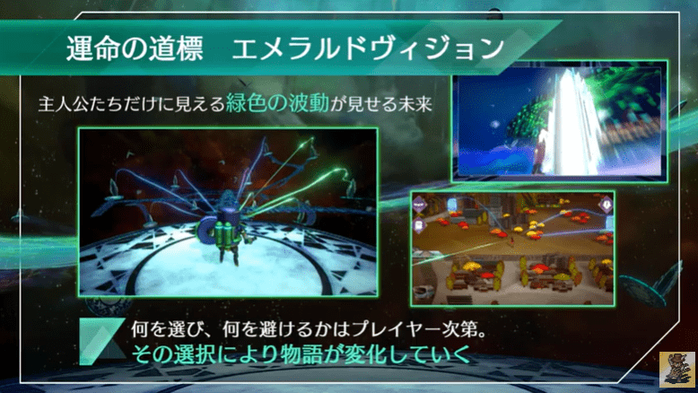
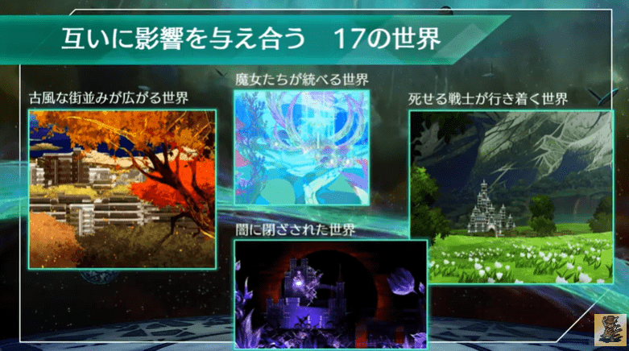
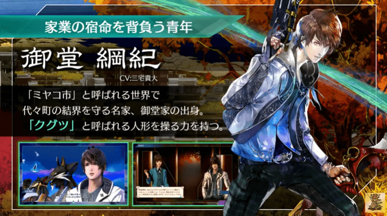
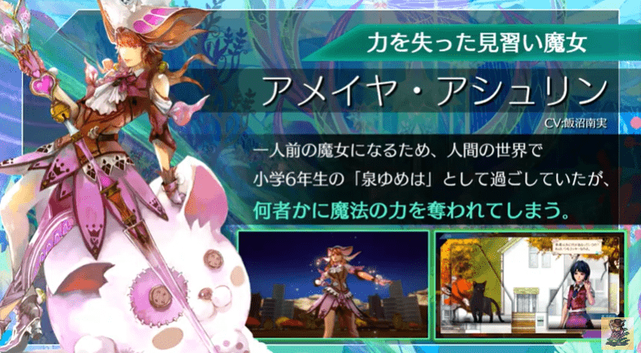
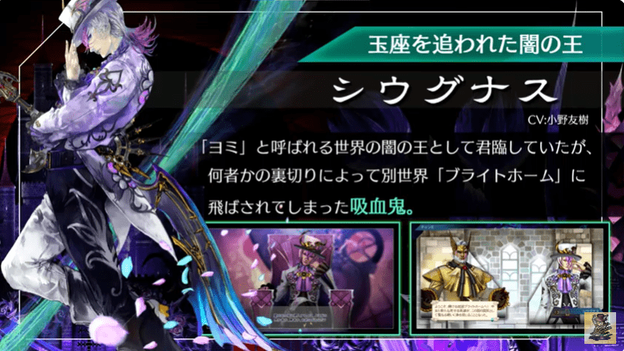
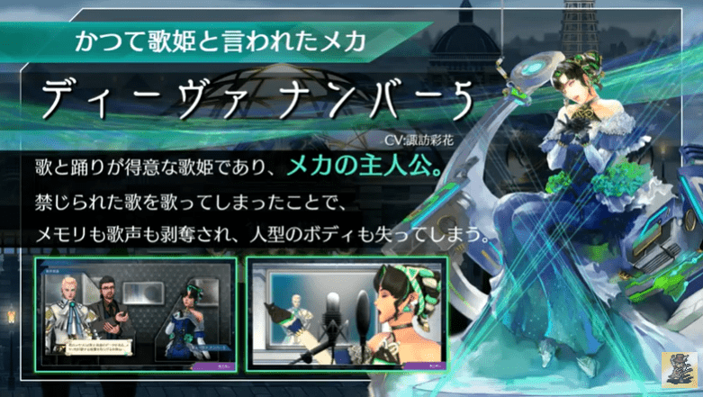
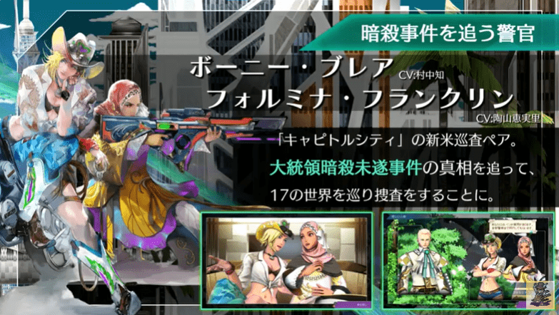
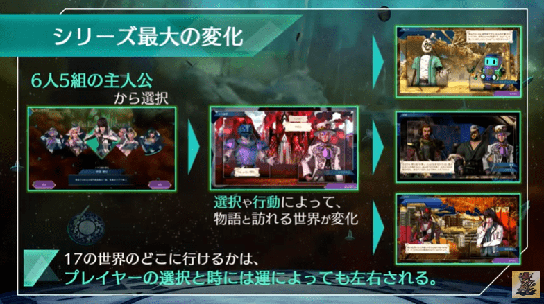
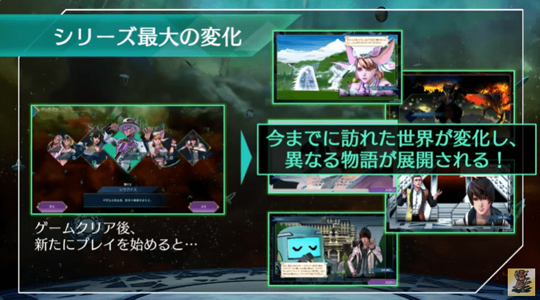
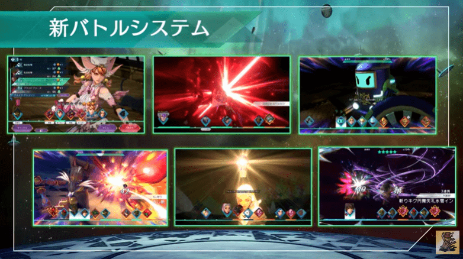
記事など
ファミ通インタビュー
ファミ通.com インタビュー発売は2024年のけっこう早い時期？という話しもある。
サガ新作『サガ エメラルド ビヨンド』河津秋敏氏らにインタビュー。
— ファミ通.com (@famitsu) September 15, 2023
・主人公は6人5組。クグツ使い、魔女、吸血鬼、新米巡査ペア、歌姫メカ
・行くべき先は、緑色の線で“見えている”
・ゲームデザインは周回前提
・発売は2024年のけっこう早い時期？#サガエメ
https://t.co/M6FZMbbiz6 pic.twitter.com/bb44dQA1Z8
公式サイト
スクエニ公式サイトSwitch, PS4/5, Steam, iOS, Androidで発売予定
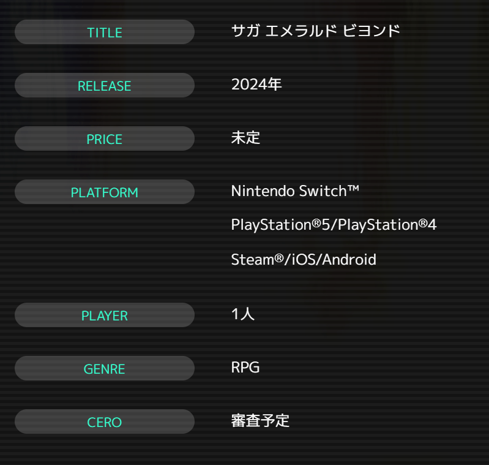
種族でわかれているらしい。世界観はサガフロ風かもしれない。
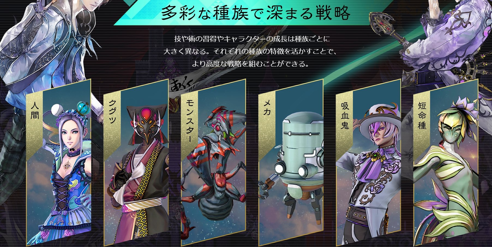
秘宝伝説のせんせいのようなキャラクターがいる。
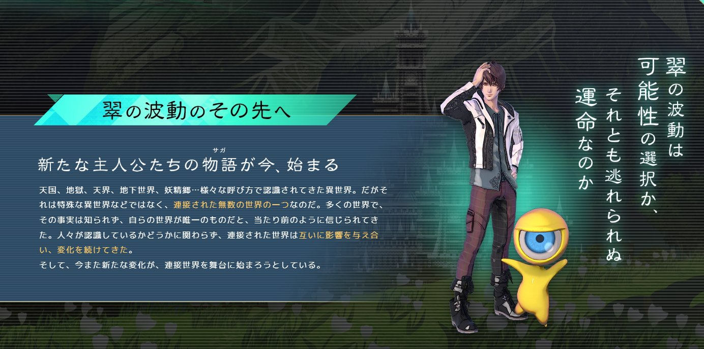